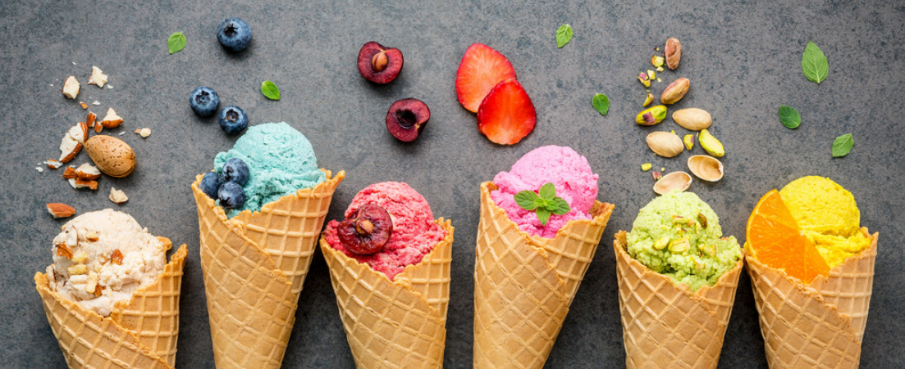

Our story
A European trip became a local business idea.
GoGo's Gelato began after a month-long trip through six countries and twelve cities, where gelato stood out as a constant part of daily life and local food culture.

Why gelato?
After returning home, the founder began recreating favorite dishes from the trip and paying closer attention to the freshness and simplicity of European ingredients. Gelato became the clearest way to bring that experience home.
The goal behind GoGo's is straightforward: make fresh gelato, create flavors people remember, and build a business that feels connected to the community around it.

The approach
Fresh ingredients and creative flavor.
GoGo's focuses on small-batch production, locally sourced ingredients when available, and a mix of consistent favorites and rotating flavors.
See the flavors